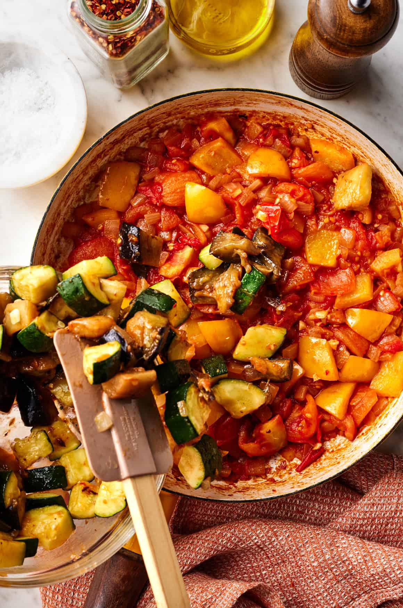

I love a good green salad, it's a good starting point for fresh, healthy meals. But summer is a time when all vegetables are at their peak. Sweet, juicy tomatoes, snappy bell peppers, and crisp cucumbers abound. This Greek salad recipe showcases these veggies, without any greens to get in the way.
Because the vegetables are in their prime, this Greek salad recipe is flavorful and refreshing with just a few ingredients. You only need 7 ingredients + an easy homemade Greek salad dressing to make it! It’s been a hit at our family gatherings over the last few weeks – my mom even added it to her regular recipe rotation. I hope you love it as much as we do!
Image of the ingredients for a greek salad.
Greek Salad Ingredients
Here’s what you’ll need to make this ratatouille recipe:
Onion and garlic – They create the stew’s savory base.
Eggplant– Any variety will work, but I typically use a medium-large Italian globe eggplant here.
Zucchini– Yellow squash is great too!
Peppers– Any type of sweet pepper will work here. I typically use yellow, orange, or red bell peppers. Avoid green bell peppers—they won’t add enough sweetness to the ratatouille.
Tomatoes– They break down into a sauce that brings the other vegetables together. Only use chopped fresh tomatoes in this recipe. Canned diced or crushed tomatoes will overpower the other veggies.
White wine vinegar– It makes the ratatouille tangy and bright.
Extra-virgin olive oil – For sautéing the veggies. You’ll add 1 to 3 tablespoons of oil to the pan at a time so that each vegetable becomes nicely caramelized and tender.
A pinch of sugar– It tames the acidity of the vinegar and tomatoes.
Red pepper flakes– For heat. Feel free to skip them if you’re sensitive to spice.
Fresh herbs– Basil and thyme add fresh, aromatic flavor to this recipe.
And of course, salt and pepper– To make all the flavors pop!
How to Make Ratatouille
Here’s my preferred method for how to make ratatouille:
Start by prepping the eggplant. Chop it into 1/2-inch pieces. Then, place it in a colander and sprinkle it with salt. Set it over a plate or bowl or in the sink to drain for 20 minutes.
recipe tip
You might be tempted to skip salting the eggplant, but this simple step is totally worth it! It draws moisture out of the eggplant, helping it cook more evenly and concentrating its flavor.
Chop and salt the eggplant right away. 20 minutes will nearly be up by the time you finish prepping the other ingredients.
Then, cook the eggplant. Blot it dry and sauté it in a large skillet until tender, 10 to 15 minutes. Remove it from the pan and set aside.
Next, cook the zucchini. When it’s tender (but not mushy!), remove it from the pan and set aside with the eggplant.
Then, cook the peppers and onions until very tender, stirring in the garlic halfway through.
Why not cook all the vegetables at once?
Eggplant, zucchini, and peppers have different cook times. If we were to toss them in the pan all together, the zucchini would be mush before the eggplant was close to tender.
These vegetables also contain a lot of moisture. If they started in the pan together, there would be too much moisture for the veggies to caramelize.
These vegetables also contain a lot of moisture. If they started in the pan together, there would be too much moisture for the veggies to caramelize.
Once the onions, bell peppers, and garlic are tender, add the tomatoes, along with the red pepper flakes and sugar. Cook until they break down into a sauce, 8 to 10 minutes.

Adding the Eggplants to the pot.
Finally, simmer the ratatouille. Return the eggplant and zucchini to the pan. Add the vinegar, thyme, salt, and pepper and cook until the ratatouille is thick.
Stir in half the basil and season to taste. Garnish with more basil and serve!